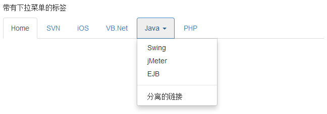

Bootstrap 导航元素
本章我们将讲解 Bootstrap 提供的用于定义导航元素的一些选项。它们使用相同的标记和基类 .nav。Bootstrap 也提供了一个用于共享标记和状态的帮助器类。改变修饰的 class，可以在不同的样式间进行切换。
表格导航或标签
创建一个标签式的导航菜单：
- 以一个带有 class .nav 的无序列表开始。
- 添加 class .nav-tabs。
下面的实例演示了这点：
<!DOCTYPE html> <html> <head> <title>Bootstrap 实例 - 标签式的导航菜单</title> <link href="/bootstrap/css/bootstrap.min.css" rel="stylesheet"> <script src="/scripts/jquery.min.js"></script> <script src="/bootstrap/js/bootstrap.min.js"></script> </head> <body> <p>标签式的导航菜单</p> <ul class="nav nav-tabs"> <li class="active"><a href="#">Home</a></li> <li><a href="#">SVN</a></li> <li><a href="#">iOS</a></li> <li><a href="#">VB.Net</a></li> <li><a href="#">Java</a></li> <li><a href="#">PHP</a></li> </ul> </body> </html>
结果如下所示：
胶囊式的导航菜单
基本的胶囊式导航菜单
如果需要把标签改成胶囊的样式，只需要使用 class .nav-pills 代替 .nav-tabs 即可，其他的步骤与上面相同。
下面的实例演示了这点：
<!DOCTYPE html> <html> <head> <title>Bootstrap 实例 - 基本的胶囊式导航菜单</title> <link href="/bootstrap/css/bootstrap.min.css" rel="stylesheet"> <script src="/scripts/jquery.min.js"></script> <script src="/bootstrap/js/bootstrap.min.js"></script> </head> <body> <p>基本的胶囊式导航菜单</p> <ul class="nav nav-pills"> <li class="active"><a href="#">Home</a></li> <li><a href="#">SVN</a></li> <li><a href="#">iOS</a></li> <li><a href="#">VB.Net</a></li> <li><a href="#">Java</a></li> <li><a href="#">PHP</a></li> </ul> </body> </html>
结果如下所示：
垂直的胶囊式导航菜单
您可以在使用 class .nav、.nav-pills 的同时使用 class .nav-stacked，让胶囊垂直堆叠。
下面的实例演示了这点：
<!DOCTYPE html> <html> <head> <title>Bootstrap 实例 - 垂直的胶囊式导航菜单</title> <link href="/bootstrap/css/bootstrap.min.css" rel="stylesheet"> <script src="/scripts/jquery.min.js"></script> <script src="/bootstrap/js/bootstrap.min.js"></script> </head> <body> <p>垂直的胶囊式导航菜单</p> <ul class="nav nav-pills nav-stacked"> <li class="active"><a href="#">Home</a></li> <li><a href="#">SVN</a></li> <li><a href="#">iOS</a></li> <li><a href="#">VB.Net</a></li> <li><a href="#">Java</a></li> <li><a href="#">PHP</a></li> </ul> </body> </html>
结果如下所示：
两端对齐的导航
您可以在屏幕宽度大于 768px 时，通过在分别使用 .nav、.nav-tabs 或 .nav、.nav-pills 的同时使用 class .nav-justified，让标签式或胶囊式导航菜单与父元素等宽。在更小的屏幕上，导航链接会堆叠。
下面的实例演示了这点：
<!DOCTYPE html> <html> <head> <title>Bootstrap 实例 - 两端对齐的导航元素</title> <link href="/bootstrap/css/bootstrap.min.css" rel="stylesheet"> <script src="/scripts/jquery.min.js"></script> <script src="/bootstrap/js/bootstrap.min.js"></script> </head> <body> <p>两端对齐的导航元素</p> <ul class="nav nav-pills nav-justified"> <li class="active"><a href="#">Home</a></li> <li><a href="#">SVN</a></li> <li><a href="#">iOS</a></li> <li><a href="#">VB.Net</a></li> <li><a href="#">Java</a></li> <li><a href="#">PHP</a></li> </ul><br><br><br> <ul class="nav nav-tabs nav-justified"> <li class="active"><a href="#">Home</a></li> <li><a href="#">SVN</a></li> <li><a href="#">iOS</a></li> <li><a href="#">VB.Net</a></li> <li><a href="#">Java</a></li> <li><a href="#">PHP</a></li> </ul> </body> </html>
结果如下所示：
禁用链接
对每个 .nav class，如果添加了 .disabled class，则会创建一个灰色的链接，同时禁用了该链接的 :hover 状态，如下面的实例所示：
<!DOCTYPE html> <html> <head> <title>Bootstrap 实例 - 导航元素中的禁用链接</title> <link href="/bootstrap/css/bootstrap.min.css" rel="stylesheet"> <script src="/scripts/jquery.min.js"></script> <script src="/bootstrap/js/bootstrap.min.js"></script> </head> <body> <p>导航元素中的禁用链接</p> <ul class="nav nav-pills"> <li class="active"><a href="#">Home</a></li> <li><a href="#">SVN</a></li> <li class="disabled"><a href="#">iOS（禁用链接）</a></li> <li><a href="#">VB.Net</a></li> <li><a href="#">Java</a></li> <li><a href="#">PHP</a></li> </ul><br><br> <ul class="nav nav-tabs"> <li class="active"><a href="#">Home</a></li> <li><a href="#">SVN</a></li> <li><a href="#">iOS</a></li> <li class="disabled"><a href="#">VB.Net（禁用链接）</a></li> <li><a href="#">Java</a></li> <li><a href="#">PHP</a></li> </ul> </body> </html>
结果如下所示：
该 class 只会改变 <a> 的外观，不会改变它的功能。在这里，您需要使用自定义的 JavaScript 来禁用链接。
下拉菜单
导航菜单与下拉菜单使用相似的语法。默认情况下，列表项的锚与一些数据属性协同合作来触发带有 .dropdown-menu class 的无序列表。
带有下拉菜单的标签
向标签添加下拉菜单的步骤如下：
- 以一个带有 class .nav 的无序列表开始。
- 添加 class .nav-tabs。
- 添加带有 .dropdown-menu class 的无序列表。
<!DOCTYPE html>
<html>
<head>
<title>Bootstrap 实例 - 带有下拉菜单的标签</title>
<link href="/bootstrap/css/bootstrap.min.css" rel="stylesheet">
<script src="/scripts/jquery.min.js"></script>
<script src="/bootstrap/js/bootstrap.min.js"></script>
</head>
<body>
<p>带有下拉菜单的标签</p>
<ul class="nav nav-tabs">
<li class="active"><a href="#">Home</a></li>
<li><a href="#">SVN</a></li>
<li><a href="#">iOS</a></li>
<li><a href="#">VB.Net</a></li>
<li class="dropdown">
<a class="dropdown-toggle" data-toggle="dropdown" href="#">
Java <span class="caret"></span>
</a>
<ul class="dropdown-menu">
<li><a href="#">Swing</a></li>
<li><a href="#">jMeter</a></li>
<li><a href="#">EJB</a></li>
<li class="divider"></li>
<li><a href="#">分离的链接</a></li>
</ul>
</li>
<li><a href="#">PHP</a></li>
</ul>
</body>
</html>
结果如下所示：

带有下拉菜单的胶囊
步骤与创建带有下拉菜单的标签相同，只是需要把 .nav-tabs class 改为 .nav-pills，如下面的实例所示：
<!DOCTYPE html>
<html>
<head>
<title>Bootstrap 实例 - 带有下拉菜单的胶囊</title>
<link href="/bootstrap/css/bootstrap.min.css" rel="stylesheet">
<script src="/scripts/jquery.min.js"></script>
<script src="/bootstrap/js/bootstrap.min.js"></script>
</head>
<body>
<p>带有下拉菜单的胶囊</p>
<ul class="nav nav-pills">
<li class="active"><a href="#">Home</a></li>
<li><a href="#">SVN</a></li>
<li><a href="#">iOS</a></li>
<li><a href="#">VB.Net</a></li>
<li class="dropdown">
<a class="dropdown-toggle" data-toggle="dropdown" href="#">
Java <span class="caret"></span>
</a>
<ul class="dropdown-menu">
<li><a href="#">Swing</a></li>
<li><a href="#">jMeter</a></li>
<li><a href="#">EJB</a></li>
<li class="divider"></li>
<li><a href="#">分离的链接</a></li>
</ul>
</li>
<li><a href="#">PHP</a></li>
</ul>
</body>
</html>
结果如下所示：